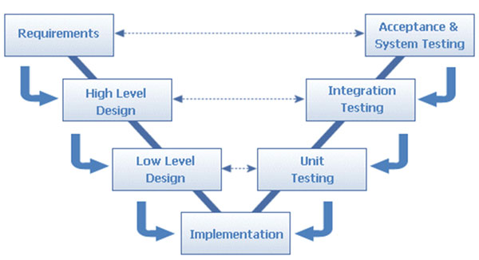

WATERFALL MODEL
Considered to be the first major (widely known) model, each phase in this model must be completed before
the project may move to the next one, and no phases overlapping in possible. This is a sequential design process consisting in the following phases: conception, initiation, analysis, design, construction, testing, production/implementation and maintenance.

V-SHAPED MODEL
Sometimes referred to as validation model or verification model, this is an expansion of the classic waterfall model. It is a very strict model where the next stage starts only after the previous one is finished. The
difference here being that every development stage has an associated test stage in order to ensure that the
conversion to the next stage is possible.
